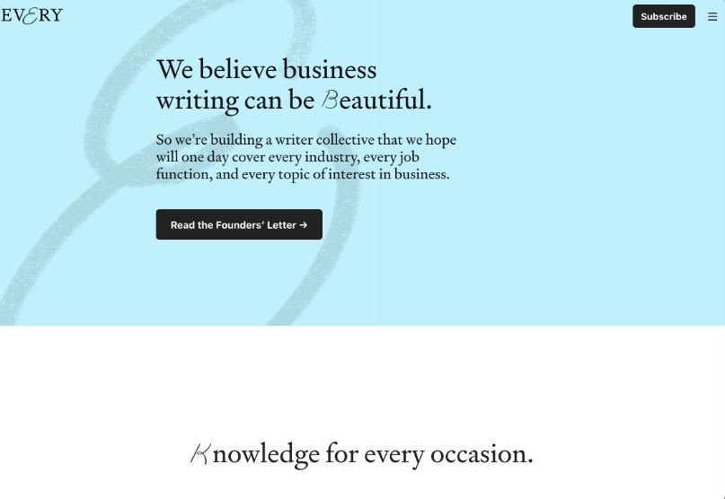

As serifadas (serif) são caracterizadas pelos pequenos detalhes nas extremidades dos caracteres.

Every utiliza serifadas nos títulos e corpo de texto, uma boa escolha para um site focado em escritores/leitores.
As sem serifas (sans serif) são caracterizadas pelas suas formas neutras e pela ausência das serifas.

A marca Moy comunica objetividade através do uso de tipografias neutras e sem serifas em toda a interface.

As monoespaçadas (monospace) possuem todos os seus caracteres com a mesma largura, permitindo que linhas de texto se alinhem perfeitamente uma abaixo da outra.

Tipografia monoespaçada é utilizada na interface do Github para mostrar o código dos arquivos. Os outros elementos da interface utilizam uma tipografia sem serifa.

As tipografias cursivas (script/handwriting) tentam imitar a escrita ocidental com formas orgânicas e geralmente ligadas entre si.

O site Bide utiliza tipografia cursiva para nomes no texto principal.

Tipografias decorativas (display) são todas aquelas que possuem características fortes que as tornam distintas de qualquer outra tipografia. Elas podem dar vida ou arruinar um projeto.

O site Drink Monday utiliza uma tipografia que lembra o estilo art nouveau em contraste com o estilo art déco da marca Monday.

O desenho de uma tipografia feito por um designer de tipos define uma família tipográfica. As famílias tipográficas são as mais variadas possíveis e geralmente possuem influências históricas.
Quando um designer cria uma família tipográfica que possui diferentes classificações, temos uma super família.

A família tipográfica é composta por diferentes fontes que podem variar desde o peso (regular/bold) ao estilo (oblique/italic). A fonte é o arquivo final.

Além de estilos pré-definidos pelo designer de tipos, hoje em dia existem também fontes variáveis que te permitem criar fontes com um ajuste mais fino:
https://web.dev/variable-fonts/
Toda fonte possui a sua classificação, família e peso.


Apesar da Roboto (corpo de texto) e Poppins (título, lista e botão) serem ambas sem serifas, a Poppins é uma geométrica e possui características diferentes o suficientes para criar contraste entre as mesmas.